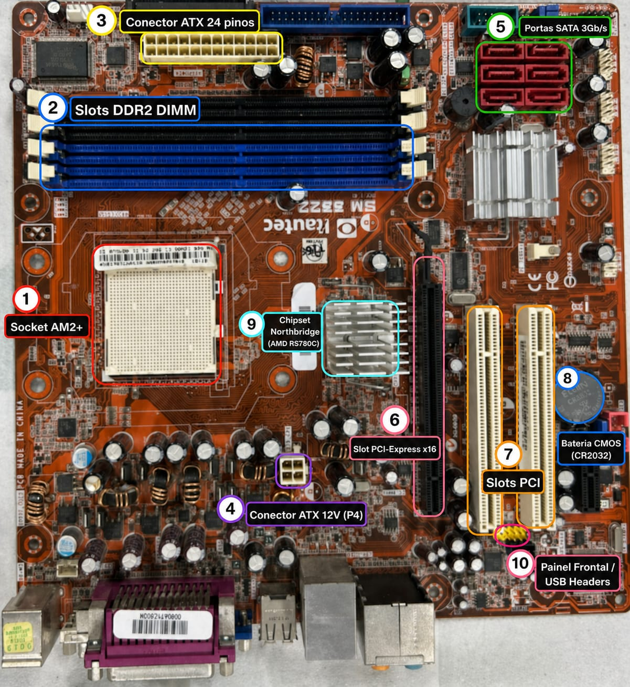

Introdução
Este projeto consiste na criação de um site temático com o objetivo de apresentar um manual completo sobre desmontagem, limpeza e montagem de computadores. O site foi desenvolvido utilizando HTML, CSS e Bootstrap, seguindo boas práticas de organização e estruturação de código.
A proposta do site é oferecer uma experiência interativa e didática, facilitando o aprendizado dos usuários por meio de diferentes formatos de conteúdo. Para isso, o sistema foi dividido em abas, permitindo a navegação entre uma introdução com os integrantes da equipe, um vídeo explicativo incorporado do YouTube, um espaço para apresentação de slides e uma seção com conteúdo escrito detalhado.
Além disso, o site conta com um checklist interativo, que auxilia o usuário a acompanhar cada etapa do processo de manutenção de um computador, tornando o aprendizado mais prático e organizado.
O design foi desenvolvido com base em uma estética temática, utilizando tons de rosa, elementos visuais decorativos e uma interface amigável. O uso do Bootstrap contribuiu para um layout responsivo, garantindo uma boa visualização tanto em computadores quanto em dispositivos móveis.
Dessa forma, o projeto une conceitos de arquitetura de computadores com desenvolvimento web, proporcionando uma ferramenta educativa moderna, visualmente atrativa e funcional.
Equipe responsável:
- Lázaro Tenório de Oliveira
- Elizabete Silva Ferreira
- Maria Vitória Torres
- Thayná Vitória Rodrigues
- Diego Tenório Silva
Manual em slide:
Descrição dos Componentes presentes no computador desmontado:
- Processador: Responsável por todo o processamento de dados da máquina. Ele trabalha a informação gerada durante a operação do computador, processando cada função acionada. Modelo usado: AMD Athlon II X2 250.
- Cooler: Controla e mantém a temperatura do processador dentro dos padrões normais requeridos para o funcionamento eviciente do computador. Modelo usado: JF0815H1LS-R.
- Memória RAM: Memória de acesso rápido que armazena, de forma temporária, informações que precisem ser acessadas de maneira rápida pelo sistema operacional. Assim, perdendo as informações quando o computador deixa de ser energinado, por exemplos, quando ele é desligado, mesmo que de forma rápida. Modelo usado: Hynix HMT112U6AFP8C-D7. DDR2 de 1 GB, 800 MHz.
- Placa-mãe: Placa principal que interliga todos os outros componentes para fazer a máquina funcionar. Assim, permite a interligação lógica e física entre memória RAM, processador, HD, placa de vídeo, drive óptico, etc. Modelo usado: Itautec SM 3322.
- Fonte: Um transformador elétrico responsável por alimentar os componentes do computador a partir da rede de energia elétrica. Modelo usado: Seasonic SS-300TFX.
- HD: Hard disk ou HD é o responsável pelo armazenamento e, por isso, pode gravar e regravar informações, salvando dados de arquivo e do sistema operacional. Além dele, existe também o SSD que é mais evoluido que o HD, porém somente o HD implementava nos componentes do computador trabalhado. Modelo usado: Samsung HD322GJ.
- Placa de rede: responsável por estabelecer a comunicação de um computador em uma rede de computadores. Modelo usado: DWA-525.

Processador
Cooler
Memória RAM
Placa-mãe
Fonte
HD
Placa de rede
REFERÊNCIAS: ESCOLA EDUCAÇÃO. Componentes de um computador – Quais são e para que servem. Cursos Escola Educação, [s.d.]. Disponível em: . Acesso em: 2 maio 2026.
Mapa de Conectividade do computador desmontado

Um mapa de conectividade é uma representação visual que mostra como os componentes de um sistema estão interligados e como a informação circula entre eles. O mapa de conectividade acima refere-se ao computador desmontado pela equipe
Manutenção Completa de Computadores
Este tutorial apresenta todas as etapas de desmontagem, limpeza e montagem de um computador, garantindo um processo seguro, organizado e eficiente.
Cuidados importantes
- Evitar eletricidade estática
- Não tocar nos circuitos
- Nunca forçar encaixes
- Trabalhar com calma
Desmontagem
1. Preparação
- Desligar o computador
- Remover da tomada
- Desconectar todos os cabos
2. Abertura do gabinete
- Remover parafusos laterais
- Abrir a tampa
3. Remoção dos cabos
- Desconectar cabos da placa-mãe
- Remover cabos SATA
4. Remoção dos componentes
- Remover HD
- Remover leitor de DVD
- Remover memória RAM
- Remover placa de rede
Limpeza
5. Limpeza geral
- Remover poeira com pedaços de papel toalha
- Usar pincel nas partes delicadas
6. Limpeza específica
- Limpar ventoinhas
- Limpar placa-mãe
- Limpar memória RAM
- Limpar HD e DVD externamente
Montagem
7. Reinstalação dos componentes
- Instalar placa-mãe (após a realocar a memória RAM, o processador e o cooler)
- Instalar HD
- Instalar leitor de DVD
- Instalar placa de rede
8. Reconexão
- Conectar cabos da fonte
- Conectar cabos SATA
- Organizar cabos internos
9. Finalização
- Fechar o gabinete
- Parafusar corretamente
- Conectar cabos externos
- Ligar o computador
- Verificar funcionamento